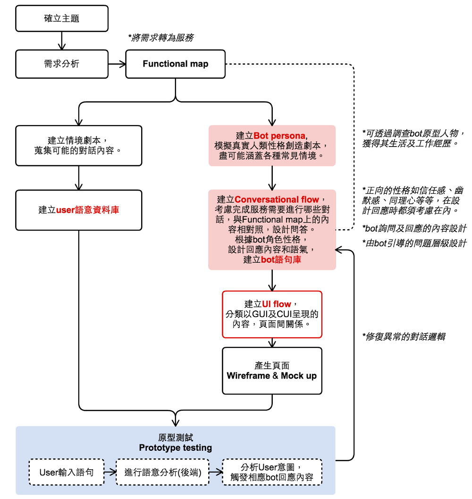

MoClippings #8 進入了一個百家機器人爭鳴的年代
發刊日 : 2016/05/09 - 2016/07/23
圈內趣事小語
相關小語來源是這段期間Twitter或訂閱的feedly上被分析出來的熱門文字。
資訊知事
- 时间管理的七句话
- 进程切换非常昂贵，避免多任务，保持单进程。
- 研究表明，集中注意力、高效工作，每天最多4小时。
- 划分任务的优先级，不要把’急切’当作’重要’。
- 起床后，不要查看邮件和微信。
- 避免开会，因为人类已知的最浪费时间的事情，就是开会。
- 早晨4点起床，到了中午，你就完成了一天的任务。
- 你没空时不会做的事情，有空了也不会做。
- 設計筆記：聊天介面的設計規範
- 輸入驗證
- 轉換任務
- 回頭追蹤
- 定時離開
- 等待緊急輸入
- 從清單中選擇
[設計筆記：淺談聊天介面與人機互動設計]
- GUI與CUI的使用時機
- GUI圖像介面：應用於呈現「圖勝於文」的內容
- CUI聊天介面：適合用來觸發繁多且瑣碎的項目
- 機器人的聊天環境規劃
- 
- GUI與CUI的使用時機
-
- Google Assistant: 一句 OK, Google，多少手指都用不上了
- Google Home：一个能与你谈天说地的音箱
- Allo：比你还会“撩妹”的聊天应用
- 当年重头的 Android，如今成了配角
- Android Wear 2.0：你可以丢掉手机，在手表上打字了！
- 开车不分心，可完全语音操控的新版 Android Auto
- 看完这一场关于未来的发布会，我们为何睡意全无？
- 简而言之，这场关于未来的发布会，Google 希望把人工智能植入到你生活的每一个场景，表面上像 Siri 的 Google Assistant，像 echo 的 Google Home，像微信的 Allo，其实都藏着一个对你更主动的机器之心。
什麼是 Azure Multi-Factor Authentication？ | Microsoft Azure
- 多因素驗證 (MFA) 是需要使用多種驗證方法，並在使用者登入和交易中新增重要的第二層安全性的驗證方法。
- 其運作方式需要下列其中任何二或多個驗證方法：
- 您知道的某些資訊 (通常是密碼)
- 您擁有的某些東西 (不容易輕易複製的信任裝置，例如電話)
- 您身上的某些特徵 (生物識別技術)
- Multi-Factor Authentication 是除了使用使用者名稱與密碼之外，需要再利用其他方法驗證您的身份的驗證方法。它可以為使用者登入和交易提供第二層安全性。
- Multi-Factor Authentication 有助於保護對資料與應用程式的存取，同時可以滿足使用者對簡單登入程序的需求。它可以透過一些簡單的驗證選項 (例如電話、文字訊息，或行動應用程式通知或驗證代碼，以及第三方 OATH 權杖) 來提供強大的驗證功能。
[Keynote] 程式碼高亮化 « yenlung’s Blog - 做簡報時如果需要貼程式碼，又需要讓其可以顯示 Highlight ，那可以參考這篇文章的作法。
Chinese Search 中文搜尋經驗分享 - 關於中文搜尋斷字、切割的基本原理介紹，以及中文斷字會遇到的困難及其解決方案。
-
很多公司宣传产品的时候都是功能优先，仿佛功能多的就比较好卖似得。应该让用户明白，买你的产品后他们能得到什么好处。
“A feature is what your product does; a benefit is what the customer can do with your product.”
例子：
- iPod: 1,000 songs in your pocket
- Evernote: Remember Everything
- LinkedIn: Be great at what you do.
- Github: Build software better, together
Design Better Forms — uxdesign.cc – User Experience Design - 如何設計好體驗的表格，這篇文章中介紹了設計表單時，可能犯的錯，以及怎麼做會更好的介紹。
UI Dashboard for IoT Device data using node red - developerWorks Recipes - IBM 正個搞的東西，可以在上面像組 IC 一樣串出自己的東西
第一銀行 ATM 盜領事件相關彙整：
ZERODIUM - How to Sell Your 0day Exploit to ZERODIUM - 如果找到關於 0day 攻擊時，應該如何賣？文中提到相關的價格
行銷推廣
Google Tag Manager - Google 提供的追蹤管理工具，可以協助設定多組不一樣的追蹤 code ，設定一次，即不需要在修改 Production 上的程式碼，在管理介面上執行即可。
-
- 行銷的思考方式及其架構
- LIVEhouse 的 Sega 簡報
專案管理
-
- User Story Mapping - Slide
艦長，你有事嗎？: Agile Tour Taipei 2015 筆記與心得（五）| Scrum Estimation Model - Joey Chen (91)
Introduction · Docker學習筆記 - 滿滿的一整本 Docker 的學習記錄書
-
- LIVEhouse 的 sega 做的關於
Google 模式這本書的簡報。 - 這份簡報把
Google 模式這本書所要傳達的核心概念講的非常好。
- LIVEhouse 的 sega 做的關於
技術知事
開發心法
-
- 小姐身子丫鬟命：Docker Engine （Runtime）
- 每次跑一个Docker程序的时候都要担心，我们会担心这个Docker有没有处理好僵尸进程的问题。
- 你也可以理解为一个木马，发一个指令就跑一个程序，而且跑的还有问题，我们不如直接SSH连接上运行这个程序，都比这个靠谱，当时很难受。
- Docker daemon？坑坑坑！
- 鸡肋的Docker Image：一个不那么圆的轮子
- 这个东西都是扯淡，因为我们内网一秒好几百M，省出10M的磁盘空间对我们来说是省几毫秒。
- Docker的核心问题，或者是Image核心问题一是编译代码，二是打包成镜像发出去。怎么编译，怎么打包，这两件事是完全分开的，不应该搀在一起。
- 我们第一个镜像是打包完3G多，当时我们震惊了，这么辛苦写了这么多的代码吗，运行程序就达到3G。
- 实践1：Build&Package&Run
- 如果不产生价值你是在给Docker打工，盲目跟从Docker，他说这么干就这么干，他如果改了你这些东西就浪费了。如果你抓住本质，Docker怎么改对你就没有影响。
- 实践2：去其糟粕，取其精华
- 实践3：工具化、代码化、半自动化
- 代码化把人才知道的东西都写到机器里，对我来说不关心数据库的IP是什么，我只要知道它的域名找到对应的机器连接就行了。
- 这是最关键的点，不管你怎么干，你最后都要干一个类似的事，就是把生产环境代码化。
- 搞了一个小工具，这些工具是提供原子性的操作。up是启动，down是干掉，rollingupdate是一个个更新，保证每个更新完了可以启动进行下一个更新，对研发来说就需要这个东西，他们都理解。
- 总结一下，第一点，想要把容器化、或想要把分布式系统做好，你要定死接口，放手实现，对你来说只需要三个接口，build、package、run，能满足效果，能运行就行了，每个项目都有不同的需求，不可能强求它完全一致。
- 第二个，生产环境容器化。
- 针对DEVOPS实现代码化、工具化，最后实现自动化就行了
- 小姐身子丫鬟命：Docker Engine （Runtime）
Visual Representation of SQL Joins - CodeProject - 畫圖解釋了 inner join、left join、right join、outer join 等的區別，文章最後也給出了示例表格，解釋得還算清楚。
工具
Cockos Incorporated | LICEcap - 在 MAC 及 Windows 上錄製 gif 圖檔的免費工具。
ScreenToGif - Home - Windows 上面 gif 製作的好工具。
- Capture Gif - The most simple way to make Screen Recording into GIF on Mac OS X - MAC 上面錄製 GIF 的好工具，可以自定畫面範圍。免費版本限制 20秒，無法調整每張圖片的速度。
GIPHY CAPTURE. The GIF Maker：在 Mac App Store 上的 App - MAC 上面的免費 GIF 製作工具，提供正轉、正轉倒轉、倒轉等模式，但限制視窗大小。
comdan66/weather: 想查詢每個地方的天氣嗎！？藉由 Google Maps API 的地圖服務，以及中央氣象局網站的天氣預報，讓你快速輕鬆的查詢台灣 368 個鄉鎮的天氣概況！
PHP Library
muxx/slack-redmine-bot: Redmine issue name expender for Slack
Robo - Modern Task Runner for PHP
- 寫 PHP 工作程式的好工具好 Framework
- 聖佑寫的 Robo ZSH-plugin - A oh-my-zsh plugin for robo command completion.
EFTEC/BladeOne: The standalone version Blade Template Engine from Laravel in a single php file
PHP Image Sizer: Resize images to a given width and height - PHP Classes
PHP Detect File Type: Identify files via MIME type and file signatures - PHP Classes